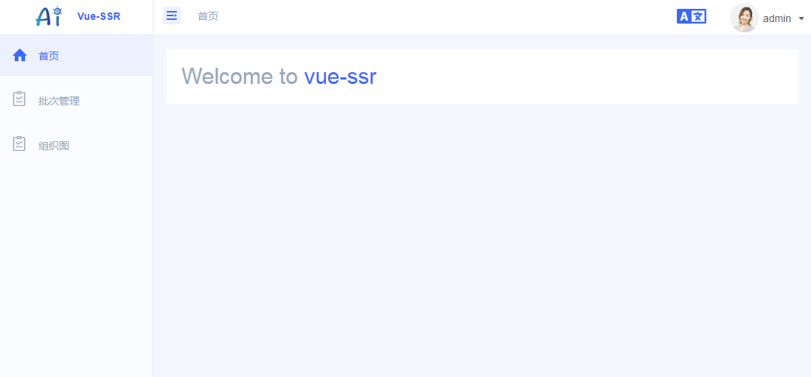
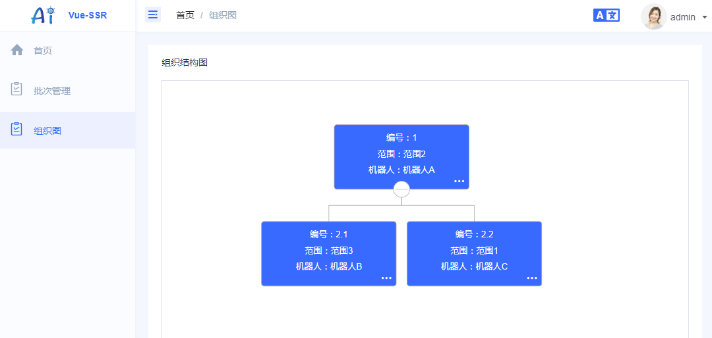

简介
本项目为企业级框架和应用而生，我希望此项目能孕育出更多上层框架，帮助开发团队和开发人员降低开发和维护成本。
本站服务端采用基于NodeJS、Koa2 搭建, 客户端采用 Vue-SSR、element-ui搭建的后台管理系统
主要技术栈: Nodejs、Koa2、vue、vue-router、vuex、ElementUI、webpack4、axios、babel7、eslint、css、scss、postcss、pm2、log4js
主要功能包括:
- 登录 / 注销
- 权限验证
- 国际化多语言
- Svg Sprite 图标
- 错误日志
- 多环境
- 自适应收缩侧边栏
- 动态侧边栏（支持多级路由嵌套）
- 快捷导航(标签页)
- 组织图
- Echart
- .....
项目截图

